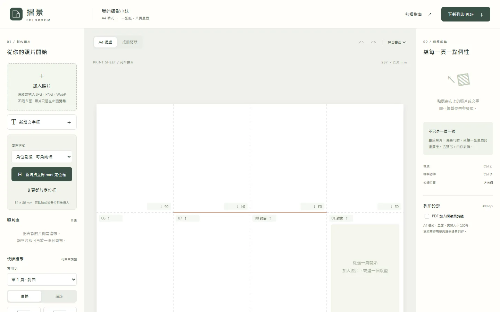

放進照片與文字
批次加入照片，拖動、裁切、旋轉，讓它跨過摺線；也能選單圖、雙圖、四圖和圖文版型。
A4 / PHOTO ZINE MAKER — 一張紙的攝影練習
把照片、文字與留白排在整張 A4 上。列印、剪一刀、摺起來，就能把片刻收進一本自己做的小誌。
不需登入 · 照片只在你的瀏覽器處理
HOW IT WORKS / 從畫面到紙本
不用先學拼版。編輯時看整張紙，預覽時看摺好的八頁。
批次加入照片，拖動、裁切、旋轉，讓它跨過摺線；也能選單圖、雙圖、四圖和圖文版型。
切換「成冊預覽」，依實際頁序查看封面、內頁跨頁與封底，確認文字方向和照片位置。
下載一頁 A4 PDF，以單面、實際大小 100% 列印；沿中央剪線剪開，再摺成八頁小冊。
MEET THE WORKSPACE / 編輯畫面
左邊挑素材，中間排整張 A4，右邊微調選取的物件。

01素材與版型加入照片、文字和拍立得 mini 定位框；套版後仍可自由調整。
02整張紙畫布以虛線和照片邊緣輔助對齊，位置、大小和角度直接用手拖。
03預覽與輸出確認摺後頁序，下載 300 dpi A4 PDF，自己決定是否印出摺線。
PHOTO AFTER PRINT / 留一格給實體照片
先排好 54 × 86 mm 拍立得 mini 的位置，印出後可以直接黏貼，或沿每角兩條短斜割線手工割開，把照片角落插進紙裡。
定位框會列印在成品上；割線需自行用刀片處理。建議先以普通紙試印、試摺。
照片不上傳、不自動保存草稿。離開前請下載列印 PDF。